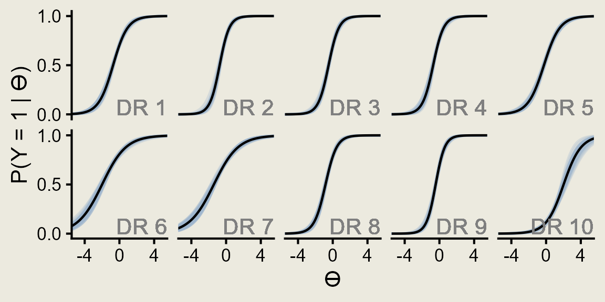
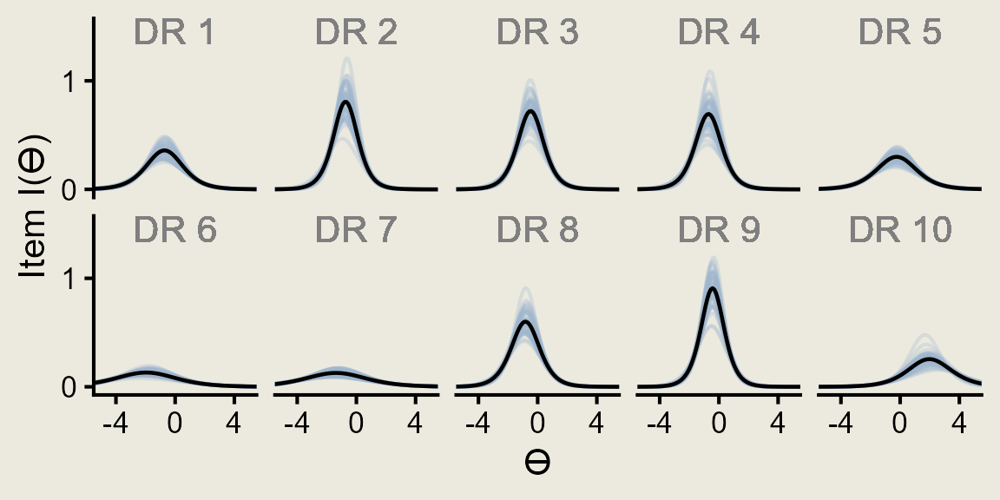
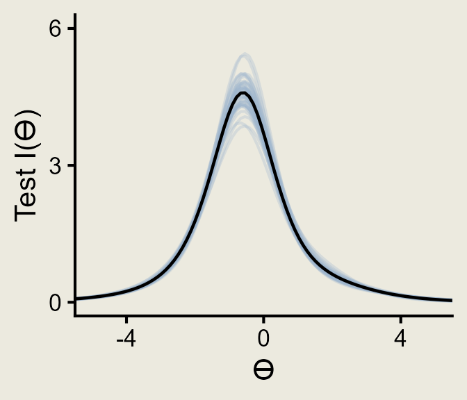

Code
options(scipen=999)
library(tidyverse)
library(rstan)
options(mc.cores = parallel::detectCores())
rstan_options(auto_write = T)Jessica Helmer
December 17, 2025
Decision rules from the Adult Decision Making Competency
dr <- admc |>
left_join(session,
by = "session_id") |>
filter(trial_name == "admc_dr_trial") |>
mutate(.by = admc_id,
admc_response = as.numeric(admc_response),
correct = case_when(admc_id %in% c("dr9", "dr10") ~ ifelse(admc_response == 3, 1, 0),
admc_id %in% c("dr8") ~ ifelse(admc_response == 2, 1, 0),
.default = ifelse(admc_response == 1, 1, 0)))
dr |>
summarize(.by = admc_id,
prop_correct = (mean(correct) * 100) |> round(2)) admc_id prop_correct
1 dr1 66.64
2 dr2 70.50
3 dr3 63.28
4 dr4 69.33
5 dr5 55.55
6 dr6 78.99
7 dr7 71.60
8 dr8 71.01
9 dr9 62.77
10 dr10 15.38admc.dr_dat <- admc |>
left_join(session,
by = "session_id") |>
filter(trial_name == "admc_dr_trial") |>
mutate(.by = admc_id,
admc_response = as.numeric(admc_response),
# scoring ADMC-DR by "correct" being all items correctly selected
# manually inputted the full correct score (i.e., 1, 2, or 3)
score = case_when(admc_id %in% c("dr9", "dr10") ~ ifelse(admc_response == 3, 1, 0),
admc_id %in% c("dr8") ~ ifelse(admc_response == 2, 1, 0),
.default = ifelse(admc_response == 1, 1, 0))) |>
left_join(rio::import("https://raw.githubusercontent.com/forecastingresearch/fpt/refs/heads/main/data_forecasting/processed_data/scores_quantile.csv") |>
select(subject_id, sscore_standardized) |>
# mean sscores per person
summarize(.by = subject_id,
sscore = mean(sscore_standardized)),
by = "subject_id") |>
select(subject_id, admc_id, score, sscore)
dir.create(here::here("Data", "ADMC Decision Rules"))Warning in dir.create(here::here("Data", "ADMC Decision Rules")):
'C:\Users\jessi\OneDrive - Georgia Institute of Technology\Atlas\FPT\Cognitive
Tasks\Data\ADMC Decision Rules' already existsProbabilities of correct response given difficulty and discrimination estimates and hypothetical \(\theta\) values.
ps <- rstan::extract(dr_m, c("a", "b")) %>%
as.data.frame() %>%
mutate(rep = row_number()) %>%
filter(rep %in% 1:50) %>%
pivot_longer(-rep,
names_to = "item", values_to = "est") %>%
separate_wider_delim(item, ".", names = c("param", "item")) %>%
pivot_wider(id_cols = c(item, rep),
names_from = param, values_from = est) %>%
expand_grid(th = seq(-6, 6, length.out = 100)) %>%
mutate(p_1 = exp(a * (th - b)) / (1 + exp(a * (th - b))),
p_0 = 1 - p_1,
info = a^2 * (p_1 * p_0))Item Response Curves
irc <- ps %>%
ggplot(aes(x = th, y = p_1, group = rep)) +
geom_line(alpha = .3, color = "slategray3") +
geom_line(data = . %>% summarize(.by = c(th, item),
p_1 = mean(p_1)),
aes(x = th, y = p_1),
inherit.aes = F, linewidth = .8) +
geom_text(aes(label = paste("DR", item)),
x = Inf, y = -Inf, color = "gray50",
hjust = 1, vjust = -.25,
inherit.aes = F) +
scale_y_continuous(breaks = c(0, .5, 1)) +
scale_x_continuous(breaks = c(-4, 0, 4)) +
coord_cartesian(xlim = c(-5, 5), ylim = c(0, 1)) +
facet_wrap(~ fct_inorder(item), nrow = 2) +
labs(y = "P(Y = 1 | ϴ)", x = "ϴ") +
theme_classic(base_size = 14) +
theme(strip.background = element_blank(),
strip.text.x = element_blank())
# saveRDS(irc, here::here("Figures", "Decision Rules", "irc.rds"))
irc
Information Curves
ic <- ps %>%
ggplot(aes(x = th, y = info, group = rep)) +
geom_line(alpha = .3, color = "slategray3") +
geom_line(data = . %>% summarize(.by = c(th, item),
info = mean(info)),
aes(x = th, y = info),
inherit.aes = F, linewidth = .8) +
geom_text(aes(label = paste("DR", item)),
y = Inf, x = 0, color = "gray50",
vjust = 1,
inherit.aes = F) +
scale_y_continuous(breaks = c(0, 1, 2)) +
scale_x_continuous(breaks = c(-4, 0, 4)) +
coord_cartesian(xlim = c(-5, 5), ylim = c(0, 1.5)) +
facet_wrap(~ fct_inorder(item), nrow = 2) +
labs(y = "Item I(ϴ)", x = "ϴ") +
theme_classic(base_size = 14) +
theme(strip.background = element_blank(),
strip.text.x = element_blank())
# saveRDS(ic, here::here("Figures", "Decision Rules", "ic.rds"))
ic
Test Information
tic <- ps %>%
summarize(.by = c(rep, th),
test_info = sum(info)) |>
ggplot(aes(x = th, y = test_info, group = rep)) +
geom_line(alpha = .3, color = "slategray3") +
geom_line(data = ps |> summarize(.by = c(rep, th),
test_info = sum(info)) |>
summarize(.by = th,
test_info = mean(test_info)),
aes(x = th, y = test_info),
inherit.aes = F, linewidth = .8) +
scale_y_continuous(breaks = c(0, 3, 6)) +
scale_x_continuous(breaks = c(-4, 0, 4)) +
coord_cartesian(xlim = c(-5, 5), ylim = c(0, 6)) +
labs(y = "Test I(ϴ)", x = "ϴ") +
theme_classic(base_size = 14) +
theme(strip.background = element_blank(),
strip.text.x = element_blank())
# saveRDS(tic, here::here("Figures", "Decision Rules", "tic.rds"))
tic